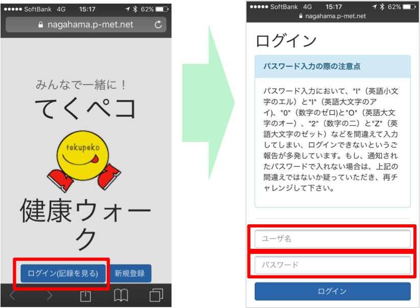

ながはま健康ウォークマニュアル
STEP1: ながはま健康ウォークのサイトにログインしよう
今年のながはま健康ウォークのユーザページにログインする方法をご説明します。
まずSafariのアイコンを押してSafariを起動します。
こちらまたは下記QRコードから ながはま健康ウォークのページにいきます。

ログインを押して、事前にお送りさせていただいたIDとパスワードをご入力ください。
IDはnagaから始まるもの、パスワードは数字6ケタです。
このようなユーザページが表示されれば、ログイン完了となります。

STEP2: 歩数を手動入力しよう
歩数計に記録された歩数を手動で反映させる方法をご説明します。
歩数計で参加されるにあたって
歩数計で参加されるにあたっていくつかの注意とお願いがあります。
お問い合わせ先
みんなで一緒にながはま健康ウォーク実行委員会事務局
Tel: 0749-65-7779